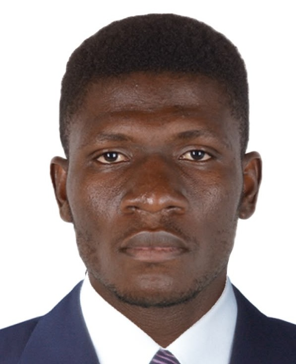

Kofi Agbenyegah Ahiataku | WDD 130

Hi, I'm Kofi Agbenyegah Ahiataku, a Software Development student at BYU-Pathway from Ghana, currently living in Abu Dhabi, UAE. I am passionate about programming, technology, and continuous learning. I enjoy building practical projects that help me develop my skills in software development, problem-solving, and web technologies. Through my studies and personal projects, I am gaining experience in programming, software design, and modern development practices. I am always eager to learn new technologies, take on challenges, and improve my abilities as a developer. My goal is to become a skilled software engineer who creates innovative solutions that solve real-world problems and make a positive impact on people's lives. This website showcases my learning journey, projects, and growth in the field of technology.